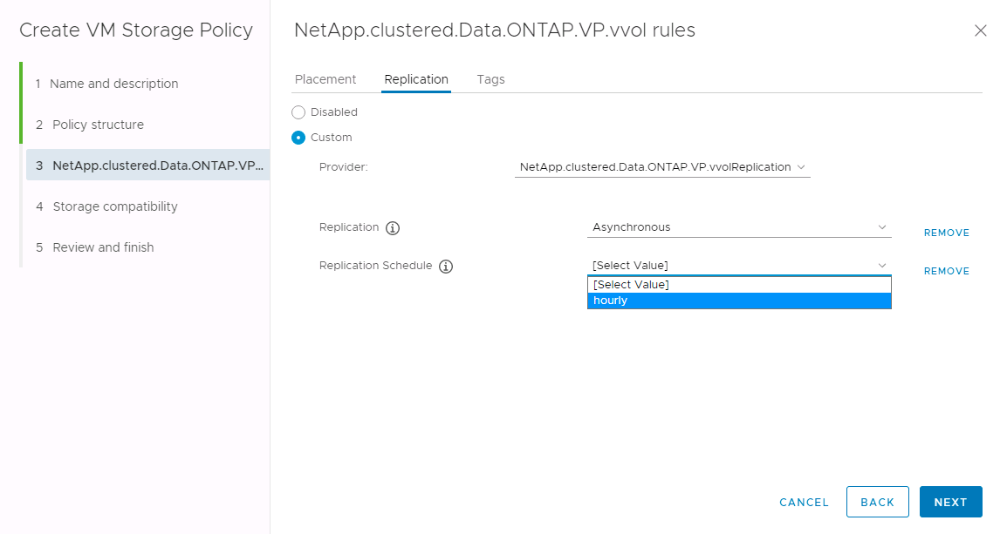
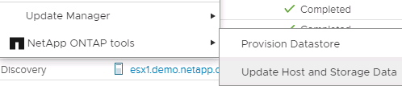

Microsoft SQL Server
Microsoft SQL Server
操作最佳实践
 建议更改
建议更改
以下各节概述了VMware SRM和ONTAP存储的最佳操作实践。
数据存储库和协议
-
如果可能，请始终使用 ONTAP 工具配置数据存储库和卷。这样可以确保卷，接合路径， LUN ， igroup ，导出策略， 以及其他设置均以兼容的方式进行配置。
-
通过 SRA 使用基于阵列的复制时， SRM 支持在 ONTAP 9 中使用 iSCSI ，光纤通道和 NFS 版本 3 。对于使用传统或 VVol 数据存储库的 NFS 版本 4.1 ， SRM 不支持基于阵列的复制。
-
要确认连接，请始终验证您是否可以从目标 ONTAP 集群在灾难恢复站点挂载和卸载新的测试数据存储库。测试要用于数据存储库连接的每个协议。最佳做法是使用 ONTAP 工具创建测试数据存储库，因为它正在按照 SRM 的指示执行所有数据存储库自动化。
-
每个站点的 SAN 协议都应是同构的。您可以混合使用 NFS 和 SAN ，但不应在站点内混合使用 SAN 协议。例如，您可以在站点 A 中使用 FCP ，在站点 B 中使用 iSCSI站点 A 不应同时使用 FCP 和 iSCSI原因是 SRA 不会在恢复站点创建混合 igroup ，并且 SRM 不会筛选为 SRA 提供的启动程序列表。
-
之前的指南建议创建LIF以定位数据。也就是说，始终使用物理拥有卷的节点上的 LIF 挂载数据存储库。在现代版本的 ONTAP 9 中，不再需要此功能。如果给定了集群范围的凭据、则ONTAP工具仍会尽可能选择在数据本地的各个LUN之间进行负载平衡、但这并不是高可用性或高性能的要求。
-
可以将NetApp ONTAP 9配置为在自动调整大小无法提供足够的紧急容量时自动删除快照、以便在空间不足的情况下保持正常运行时间。此功能的默认设置不会自动删除由SnapMirror创建的快照。如果删除了SnapMirror快照、则NetApp SRA将无法反转和重新同步受影响卷的复制。要防止ONTAP删除SnapMirror快照、请将Snapshot自动删除功能配置为尝试。
snap autodelete modify -volume -commitment try
-
卷自动调整大小应设置为
grow对于包含SAN数据存储库和的卷grow_shrink对于NFS数据存储库。了解更多信息 "将卷配置为自动增长或缩减"。 -
如果恢复计划中的数据存储库数量和保护组数量达到最低、则SRM的性能最佳。因此、您应考虑在受SRM保护的环境中优化虚拟机密度、在这种环境中、应使用最重要的是RTO。
-
使用Distributed Resource Scheduler (DRS)帮助平衡受保护和恢复ESXi集群上的负载。请记住、如果您计划故障恢复、则在运行重新保护时、先前受保护的集群将成为新的恢复集群。DRS将有助于平衡两个方向的放置。
-
如有可能、请避免对SRM使用IP自定义、因为这会增加您的RTO。
基于存储策略的管理(Storage Policy Based Management、SPBM)和虚拟卷
从SRM 8.3开始、支持使用Vvol数据存储库保护VM。在 ONTAP 工具设置菜单中启用 VVOL 复制后， VASA Provider 会将 SnapMirror 计划公开到 VM 存储策略中，如以下屏幕截图所示。
以下示例显示了已启用的卷复制。

以下屏幕截图提供了创建 VM 存储策略向导中显示的 SnapMirror 计划示例。

ONTAP VASA Provider 支持故障转移到不同的存储。例如，系统可以从边缘位置的 ONTAP Select 故障转移到核心数据中心的 AFF 系统。无论存储相似性如何，您都必须始终为启用了复制的 VM 存储策略配置存储策略映射和反向映射，以确保在恢复站点提供的服务满足预期和要求。以下屏幕截图突出显示了一个示例策略映射。

为 VVOL 数据存储库创建复制的卷
与以前的 VVOL 数据存储库不同，复制的 VVOL 数据存储库必须在启用复制的情况下从头开始创建，并且它们必须使用在具有 SnapMirror 关系的 ONTAP 系统上预创建的卷。这需要预先配置集群对等和 SVM 对等。这些活动应由ONTAP管理员执行、因为这样可以在管理多个站点的ONTAP系统的人员与主要负责vSphere操作的人员之间实现严格的职责分离。
这代表 vSphere 管理员提出了一项新要求。由于卷是在 ONTAP 工具的范围之外创建的，因此在定期计划的重新发现期间之前，它不会意识到 ONTAP 管理员所做的更改。因此，最好在创建要用于 VVol 的卷或 SnapMirror 关系时始终运行重新发现。只需右键单击主机或集群、然后选择NetApp ONTAP工具>更新主机和存储数据、如以下屏幕截图所示。

对于 VVOL 和 SRM ，应注意一个事项。切勿在同一个 VVOL 数据存储库中混用受保护和未受保护的 VM 。原因是，在使用 SRM 故障转移到灾难恢复站点时，灾难恢复中只会使属于保护组的 VM 联机。因此，在重新保护（将 SnapMirror 从灾难恢复反转至生产环境）时，您可能会覆盖未进行故障转移且可能包含有价值数据的 VM 。
关于阵列对
系统会为每个阵列对创建一个阵列管理器。使用 SRM 和 ONTAP 工具，每个阵列配对都在 SVM 的范围内完成，即使您使用的是集群凭据也是如此。这样，您可以根据租户分配给他们管理的 SVM 在租户之间划分灾难恢复工作流。您可以为一个给定集群创建多个阵列管理器、这些阵列管理器可以是非对称的。您可以在不同的 ONTAP 9 集群之间扇出或扇入。例如，可以将集群 1 上的 SVMA 和 SVM-B 复制到集群 2 上的 SVM-C ，集群 3 上的 SVM-D ，反之亦然。
在 SRM 中配置阵列对时，应始终按照将其添加到 ONTAP 工具的方式在 SRM 中添加这些阵列对，也就是说，它们必须使用相同的用户名，密码和管理 LIF 。此要求可确保 SRA 与阵列正确通信。以下屏幕截图说明了集群在 ONTAP 工具中的显示方式以及如何将其添加到阵列管理器中。

关于复制组
复制组包含同时恢复的虚拟机的逻辑集合。ONTAP 工具 VASA Provider 会自动为您创建复制组。由于 ONTAP SnapMirror 复制是在卷级别进行的，因此卷中的所有 VM 都位于同一个复制组中。
对于复制组以及如何在 FlexVol 卷之间分布虚拟机，需要考虑几个因素。对于缺少聚合级重复数据删除的旧版ONTAP系统、将相似的VM分组在同一个卷中可以提高存储效率、但分组会增加卷的大小并减少卷I/O并发性。在现代ONTAP系统中、可以通过在同一聚合中的FlexVol卷之间分布虚拟机、从而利用聚合级重复数据删除并在多个卷之间实现更大的I/O并行处理能力、从而在性能和存储效率之间实现最佳平衡。您可以同时恢复卷中的 VM ，因为一个保护组（如下所述）可以包含多个复制组。此布局的缺点是、由于卷SnapMirror不考虑聚合重复数据删除、数据块可能会通过缆线传输多次。
对于复制组，最后要考虑的一点是，每个复制组本身都是一个逻辑一致性组（不要与 SRM 一致性组相混淆）。这是因为卷中的所有 VM 都会使用同一个快照一起传输。因此，如果您的虚拟机必须彼此一致，请考虑将其存储在同一个 FlexVol 中。
关于保护组
保护组用于定义从受保护站点一起恢复的组中的 VM 和数据存储库。受保护站点是指在正常稳定状态操作期间，在保护组中配置的 VM 所在的站点。请务必注意，即使 SRM 可能会为一个保护组显示多个阵列管理器，一个保护组也不能跨越多个阵列管理器。因此，您不应将 VM 文件跨越不同 SVM 上的数据存储库。
关于恢复计划
恢复计划定义了在同一过程中恢复的保护组。可以在同一恢复计划中配置多个保护组。此外，要为执行恢复计划提供更多选项，可以在多个恢复计划中包含一个保护组。
通过恢复计划， SRM 管理员可以定义恢复工作流，方法是将 VM 分配给优先级组，优先级组从 1 （最高）到 5 （最低）不等，默认值为 3 （中等）。在优先级组中，可以为 VM 配置依赖关系。
例如、您的公司可能拥有一个第1层业务关键型应用程序、该应用程序的数据库依赖于Microsoft SQL Server。因此，您决定将 VM 置于优先级组 1 中。在优先级组 1 中，您开始规划订单以启动服务。您可能希望 Microsoft Windows 域控制器在 Microsoft SQL 服务器之前启动，而该服务器需要在应用程序服务器之前联机，依此类推。您可以将所有这些VM添加到优先级组、然后设置依赖关系、因为依赖关系仅适用于给定优先级组。
NetApp 强烈建议您与应用程序团队合作，了解故障转移场景中所需的操作顺序，并相应地构建恢复计划。
测试故障转移
作为最佳实践，每当对受保护 VM 存储的配置进行更改时，始终执行测试故障转移。这样可以确保在发生灾难时、您可以相信Site Recovery Manager可以在预期的Recovery目标范围内还原服务。
NetApp 还建议偶尔确认子系统中的应用程序功能，尤其是在重新配置 VM 存储之后。
执行测试恢复操作时，会在 ESXi 主机上为 VM 创建一个专用测试气泡网络。但是，此网络不会自动连接到任何物理网络适配器，因此不会在 ESXi 主机之间提供连接。为了允许在灾难恢复测试期间不同 ESXi 主机上运行的 VM 之间进行通信，在灾难恢复站点的 ESXi 主机之间创建了一个物理专用网络。要验证测试网络是否为专用网络，可以通过物理方式或使用 VLAN 或 VLAN 标记来隔离测试气泡网络。必须将此网络与生产网络隔离，因为在恢复 VM 后，不能将其放置在 IP 地址可能与实际生产系统冲突的生产网络上。在 SRM 中创建恢复计划时，可以选择创建的测试网络作为测试期间 VM 连接到的专用网络。
验证测试并使其不再需要后，请执行清理操作。运行清理会将受保护的 VM 恢复到其初始状态，并将恢复计划重置为就绪状态。
故障转移注意事项
除了本指南中所述的操作顺序之外，在对站点进行故障转移时还需要考虑其他几个注意事项。
您可能需要应对的一个问题描述是站点之间的网络差异。某些环境可能能够在主站点和灾难恢复站点使用相同的网络 IP 地址。此功能称为延伸型虚拟 LAN （ VLAN ）或延伸型网络设置。其他环境可能要求主站点使用与灾难恢复站点相对的不同网络 IP 地址（例如，在不同的 VLAN 中）。
VMware 提供了多种方法来解决此问题。例如， VMware NSX-T Data Center 等网络虚拟化技术可从操作环境中将整个网络堆栈从第 2 层抽象为第 7 层，从而提供更便携的解决方案。了解更多信息 "SRM的NSX-T选项"。
通过 SRM ，您还可以在虚拟机恢复后更改其网络配置。此重新配置包括IP地址、网关地址和DNS服务器设置等设置。恢复计划中VM的属性设置中可以指定不同的网络设置、这些设置会在恢复后应用于各个VM。
要将 SRM 配置为对多个 VM 应用不同的网络设置，而无需编辑恢复计划中每个 VM 的属性， VMware 提供了一个名为 dr-ip-customizer 的工具。要了解如何使用此实用程序、请参见 "VMware文档"。
重新保护
恢复后，恢复站点将成为新的生产站点。由于恢复操作中断了 SnapMirror 复制，因此新生产站点不会受到任何未来灾难的影响。最佳实践是，在恢复后立即将新生产站点保护到另一站点。如果原始生产站点正常运行， VMware 管理员可以使用原始生产站点作为新的恢复站点来保护新生产站点，从而有效地反转保护方向。只有在发生非灾难性故障时，才可重新保护。因此，原始 vCenter Server ， ESXi 服务器， SRM 服务器和相应的数据库最终必须可恢复。如果没有可用的保护组和新的恢复计划，则必须创建新的保护组和恢复计划。
故障恢复
从根本上说，故障恢复操作是指方向与以前不同的故障转移。作为最佳实践，在尝试故障恢复或换句话说，故障转移到原始站点之前，您应验证原始站点是否已恢复到可接受的功能级别。如果原始站点仍然受到影响，您应延迟故障恢复，直到故障得到充分修复为止。
另一个故障恢复最佳实践是，始终在完成重新保护之后以及执行最终故障恢复之前执行测试故障转移。此操作将验证原始站点上的系统是否可以完成此操作。
重新保护原始站点
在故障恢复之后、您应与所有利益相关方确认其服务已恢复正常、然后再再次运行重新保护。
在故障恢复后运行重新保护实际上会使环境恢复到最初的状态，同时重新运行从生产站点到恢复站点的 SnapMirror 复制。